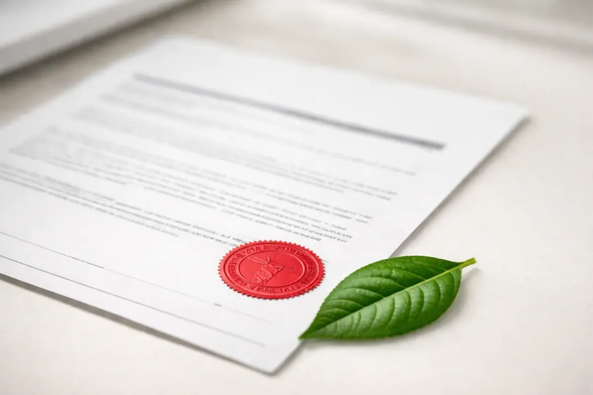
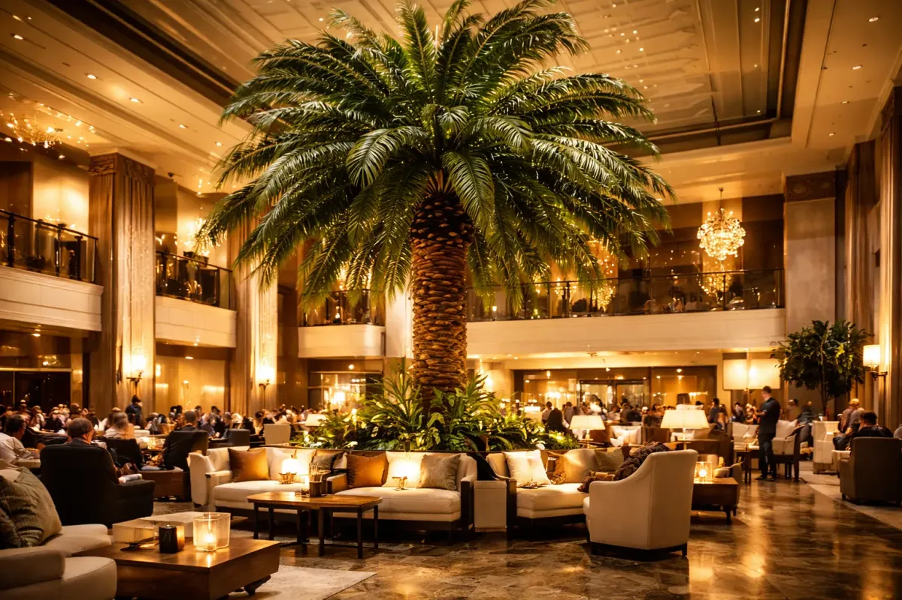
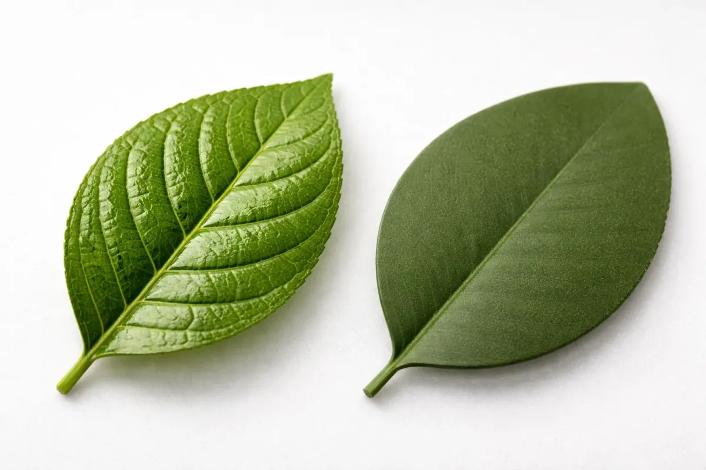
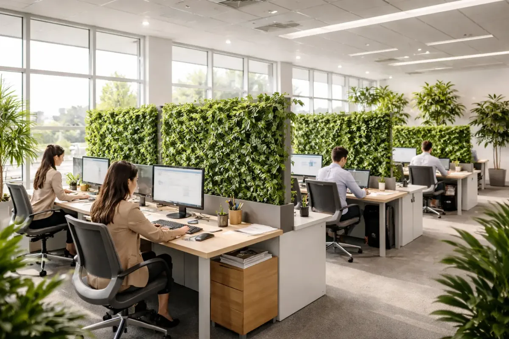
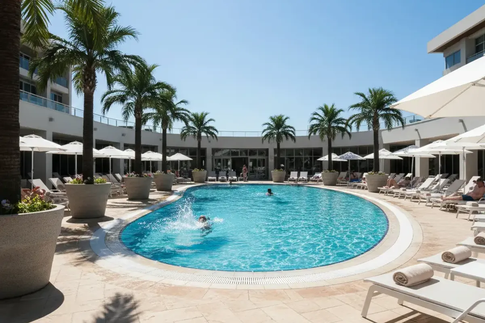

Design trends, fire safety guidance, project spotlights, and everything you need to know about artificial plants for commercial spaces.

If you're specifying artificial plants for a hotel or commercial property in the United States, NFPA 701 is non-negotiable. Here's what it means, how to verify compliance, and what questions to ask your supplier.
Read Article →
From oversized statement palms to full-ceiling hanging installations, here are the artificial plant trends our hotel clients are requesting most this year.
Read more →A case study showing how a single green wall installation transformed dwell time, social media mentions, and covers per evening at a Sydney restaurant.
Read more →
Not all artificial plant materials are equal. Here's the definitive guide to why PE (polyethylene) is the commercial standard — and what to look for when evaluating suppliers.
Read more →
The research is clear — nature in the workplace improves focus, reduces stress, and lowers absenteeism. Here's how to achieve biophilic design without live plant maintenance costs.
Read more →
Not all artificial plants are suitable for outdoor use. This guide explains UV ratings, expected lifespan, and what to look for when specifying outdoor commercial installations.
Read more →A practical checklist covering fire certification, material grade, sizing, vessel options, and supplier vetting — everything you need to specify artificial plants with confidence.
Read more →Occasional posts on design trends, fire safety, and commercial plant specifying. No spam — unsubscribe any time.
You're subscribed! We'll send new posts your way.